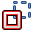
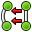
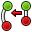
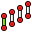

The Part Design Workbench provides tools for modelling complex solid parts and is based on a Feature editing methodology to produce a single contiguous solid. It is intricately linked with the Sketcher Workbench.
What is a single contiguous solid? This is an item like a casting or something machined from a single block of metal. If the item involves nails, screws, glue or welding, it is not a single contiguous solid. As a practical example, PartDesign would not be used to model a wooden chair, but would be used to model the subcomponents (legs, slats, seat, etc). The subcomponents are combined using the Assembly, Part or Draft workbench.

Basic Workflow
The sketch is the building block for creating and editing solid parts. The workflow can be summarized by this: a sketch containing 2D geometry is created first, then a solid creation tool is used on the sketch. At the moment the available tools are:
-
 Pad which extrudes a sketch
Pad which extrudes a sketch -
 Pocket which creates a pocket on an existing solid
Pocket which creates a pocket on an existing solid -
 Revolution which creates a solid by revolving a sketch along an axis
Revolution which creates a solid by revolving a sketch along an axis -
 Groove which creates a groove in an existing solid
Groove which creates a groove in an existing solid
More tools are planned in future releases.
A very important concept in the PartDesign Workbench is the sketch support. Sketches can be created on standard planes (XY, XZ, YZ and planes parallel to them) or on a planar face of an existing solid. For this last case, the existing solid becomes the support of the sketch. Several tools will only work with sketches that have a support, for example, Pocket - without a support there would be nothing to remove material from!
After solid geometry has been created it can be modified with chamfers and fillets or transformed, e.g. mirrored or patterned.
The PartDesign Workbench is meant to create a single, connected solid. Multiple solids will be possible with the Assembly workbench.
As we create a model in the Part Design Workbench, each feature takes the shape of the last one and adds or removes something, creating linear dependencies from feature to feature as the model is created. Hence a "Cut" feature is not only the cut hole itself, but the whole part with the cut. As a new feature is added to the model, FreeCAD turns off visibility of the old features. The user usually should only have the newest item (feature) in the model tree visible, because otherwise the other phases of the model overlay each other, and holes are filled in by the earlier model features that didn't yet have those holes.
To toggle visibility of an object on or off, select it in the hierarchy tree and press the Spacebar. Usually everything but the last item in the hierarchy tree should be greyed out and therefore not visible in the 3D view.
The Tools
The Part Design tools are all located in the Part Design menu that appears when you load the Part Design module.
They include the Sketcher Workbench tools, since the Part Design module is so dependent on them.
The Sketcher Tools
Sketcher Geometries
These are tools for creating objects.
-
 Point: Draws a point.
Point: Draws a point. -
 Line by 2 point: Draws a line segment from 2 points.
Line by 2 point: Draws a line segment from 2 points. -
 Arc: Draws an arc segment from center, radius, start angle and end angle.
Arc: Draws an arc segment from center, radius, start angle and end angle. -
 Arc by 3 Point: Draws an arc segment from two endpoints and another point on the circumference.
Arc by 3 Point: Draws an arc segment from two endpoints and another point on the circumference. -
 Circle: Draws a circle from center and radius.
Circle: Draws a circle from center and radius. -
 Circle by 3 Point : Draws a circle from three points on the circumference.
Circle by 3 Point : Draws a circle from three points on the circumference. -
 Conic sections:
Conic sections:
-
 Ellipse by center : Draws an ellipse by center point, major radius point and minor radius point. (v0.15)
Ellipse by center : Draws an ellipse by center point, major radius point and minor radius point. (v0.15) -
 Ellipse by 3 points : Draws an ellipse by major diameter (2 points) and minor radius point. (v0.15)
Ellipse by 3 points : Draws an ellipse by major diameter (2 points) and minor radius point. (v0.15) -
 Arc of ellipse : Draws an arc of ellipse by center point, major radius point, starting point and ending point. (v0.15)
Arc of ellipse : Draws an arc of ellipse by center point, major radius point, starting point and ending point. (v0.15)  Arc of hyperbola: Draws an arc of hyperbola. (v0.17)
Arc of hyperbola: Draws an arc of hyperbola. (v0.17) Arc of parabola: Draws an arc of parabola. (v0.17)
Arc of parabola: Draws an arc of parabola. (v0.17)
-
-
 Polyline (multiple-point line): Draws a line made of multiple line segments. Pressing the M key while drawing a Polyline toggles between the different polyline modes.
Polyline (multiple-point line): Draws a line made of multiple line segments. Pressing the M key while drawing a Polyline toggles between the different polyline modes. -
 Rectangle: Draws a rectangle from 2 opposite points.
Rectangle: Draws a rectangle from 2 opposite points. -
 Triangle: Draws a regular triangle inscribed in a construction geometry circle. (v0.15)
Triangle: Draws a regular triangle inscribed in a construction geometry circle. (v0.15) -
 Square: Draws a regular square inscribed in a construction geometry circle. (v0.15)
Square: Draws a regular square inscribed in a construction geometry circle. (v0.15) -
 Pentagon: Draws a regular pentagon inscribed in a construction geometry circle. (v0.15)
Pentagon: Draws a regular pentagon inscribed in a construction geometry circle. (v0.15) -
 Hexagon: Draws a regular hexagon inscribed in a construction geometry circle. (v0.15)
Hexagon: Draws a regular hexagon inscribed in a construction geometry circle. (v0.15) -
 Heptagon: Draws a regular heptagon inscribed in a construction geometry circle. (v0.15)
Heptagon: Draws a regular heptagon inscribed in a construction geometry circle. (v0.15) -
 Octagon: Draws a regular octagon inscribed in a construction geometry circle. (v0.15)
Octagon: Draws a regular octagon inscribed in a construction geometry circle. (v0.15) -
 Slot: Draws an oval by selecting the center of one semicircle and an endpoint of the other semicircle.
Slot: Draws an oval by selecting the center of one semicircle and an endpoint of the other semicircle. -
 Fillet: Makes a fillet between two lines joined at one point. Select both lines or click on the corner point, then activate the tool.
Fillet: Makes a fillet between two lines joined at one point. Select both lines or click on the corner point, then activate the tool. -
 Trimming: Trims a line, circle or arc with respect to the clicked point.
Trimming: Trims a line, circle or arc with respect to the clicked point. -
 External Geometry: Creates an edge linked to external geometry.
External Geometry: Creates an edge linked to external geometry. -  Construction Mode: A construction object will be shown in blue and will not be used in a 3D geometry operation. It is only visible while editing the Sketch that contains it. Selecting existing Sketcher geometry and then clicking this tool toggles that geometry between regular and construction mode. Selecting this tool when no Sketcher geometry is selected changes the mode (regular vs. construction) in which future objects will be created.
{kind=link}
Sketcher Constraints
Constraints are used to define lengths, set rules between sketch elements, and to lock the sketch along the vertical and horizontal axes. Some constraints require the Helper constraints
Not associated with numeric data
-
 Coincident: Affixes a point onto (coincident with) one or more other points.
Coincident: Affixes a point onto (coincident with) one or more other points. -
 Point On Object: Affixes a point onto another object such as a line, arc, or axis.
Point On Object: Affixes a point onto another object such as a line, arc, or axis. -
 Vertical: Constrains the selected lines or polyline elements to a true vertical orientation. More than one object can be selected before applying this constraint.
Vertical: Constrains the selected lines or polyline elements to a true vertical orientation. More than one object can be selected before applying this constraint. -
 Horizontal: Constrains the selected lines or polyline elements to a true horizontal orientation. More than one object can be selected before applying this constraint.
Horizontal: Constrains the selected lines or polyline elements to a true horizontal orientation. More than one object can be selected before applying this constraint. -
 Parallel: Constrains two or more lines parallel to one another.
Parallel: Constrains two or more lines parallel to one another. -
 Perpendicular: Constrains two lines perpendicular to one another, or constrains a line perpendicular to an arc endpoint.
Perpendicular: Constrains two lines perpendicular to one another, or constrains a line perpendicular to an arc endpoint. -
 Tangent: Creates a tangent constraint between two selected entities, or a co-linear constraint between two line segments. A line segment does not have to lie directly on an arc or circle to be constrained tangent to that arc or circle.
Tangent: Creates a tangent constraint between two selected entities, or a co-linear constraint between two line segments. A line segment does not have to lie directly on an arc or circle to be constrained tangent to that arc or circle. -
 Equal Length: Constrains two selected entities equal to one another. If used on circles or arcs their radii will be set equal.
Equal Length: Constrains two selected entities equal to one another. If used on circles or arcs their radii will be set equal. -
 Symmetric: Constrains two points symmetrically about a line, or constrains the first two selected points symmetrically about a third selected point.
Symmetric: Constrains two points symmetrically about a line, or constrains the first two selected points symmetrically about a third selected point. - Constrain Block: v 0.17 Basically allows to block a geometric element in place with a single constraint. It should be particularly useful to work with B-Splines. See https://forum.freecadweb.org/viewtopic.php?f=9&t=26572
{kind=link}
Associated with numeric data
For these constraints you can use the expressions. The data may be taken from a spreadsheet.
-
 Lock: Constrains the selected item by setting vertical and horizontal distances relative to the origin, thereby locking the location of that item. These constraint distances can be edited later.
Lock: Constrains the selected item by setting vertical and horizontal distances relative to the origin, thereby locking the location of that item. These constraint distances can be edited later. -
 Horizontal Distance: Fixes the horizontal distance between two points or line endpoints. If only one item is selected, the distance is set to the origin.
Horizontal Distance: Fixes the horizontal distance between two points or line endpoints. If only one item is selected, the distance is set to the origin. -
 Vertical Distance: Fixes the vertical distance between 2 points or line endpoints. If only one item is selected, the distance is set to the origin.
Vertical Distance: Fixes the vertical distance between 2 points or line endpoints. If only one item is selected, the distance is set to the origin. -
 Length: Defines the distance of a selected line by constraining its length, or defines the distance between two points by constraining the distance between them.
Length: Defines the distance of a selected line by constraining its length, or defines the distance between two points by constraining the distance between them. -
 Radius: Defines the radius of a selected arc or circle by constraining the radius.
Radius: Defines the radius of a selected arc or circle by constraining the radius. -
 Internal Angle: Defines the internal angle between two selected lines.
Internal Angle: Defines the internal angle between two selected lines. - Snell's Law: Constrains two lines to obey a refraction law to simulate the light going through an interface. (v 0.15)
- Internal Alignment: Aligns selected elements to selected shape (e.g. a line to become major axis of an ellipse).
{kind=link}
{kind=link}
- Toggle Constraint: Toggles the toolbar or the selected constraints to/from reference mode. v0.16
{kind=link}
Other
-
 New sketch: Creates a new sketch on a selected face or plane. If no face is selected while this tool is executed the user is prompted to select a plane from a pop-up window.
New sketch: Creates a new sketch on a selected face or plane. If no face is selected while this tool is executed the user is prompted to select a plane from a pop-up window.
- Edit sketch: Edit the selected Sketch.
{kind=link}
-
 Leave sketch: Leave the Sketch editing mode.
Leave sketch: Leave the Sketch editing mode.
-
 View sketch: Sets the model view perpendicular to the sketch plane.
View sketch: Sets the model view perpendicular to the sketch plane.
-
 Map sketch to face: Maps a sketch to the previously selected face of a solid.
Map sketch to face: Maps a sketch to the previously selected face of a solid.
- Reorient sketch : Allows you to change the position of a sketch
- Validate sketch: It allows you to check if there are in the tolerance of different points and to match them.
- Merge sketches: Merge two or more sketches. [v 0.15]
{kind=link}
- Mirror sketch: Mirror a sketch along the x-axis, the y-axis or the origin [v 0.16]
{kind=link}
-  Close Shape: Creates a closed shape by applying coincident constraints to endpoints [v 0.15]
{kind=link}
-  Connect Edges: Connect sketcher elements by applying coincident constraints to endpoints [v 0.15]
{kind=link}
- Select Constraints: Selects the constraints of a sketcher element [v 0.15]
{kind=link}
- Select Origin: Selects the origin of a sketch [v 0.15]
{kind=link}
- Select Vertical Axis: Selects the vertical axis of a sketch [v 0.15]
{kind=link}
- Select Horizontal Axis: Selects the horizontal axis of a sketch [v 0.15]
{kind=link}
- Select Redundant Constraints: Selects redundant constraints of a sketch [v 0.15]
{kind=link}
- Select Conflicting Constraints: Selects conflicting constraints of a sketch [v 0.15]
{kind=link}
- Select Elements Associated with constraints: Select sketcher elements associated with constraints [v 0.15]
{kind=link}
- Show/Hide internal geometry: Recreates missing/deletes unneeded geometry aligned to internal geometry of a selected element (applicable only to ellipse so far). [v 0.15]
{kind=link}
- Symmetry: Copies a sketcher element symmetrical to a chosen line [v 0.16]
{kind=link}
-
 Clone: Clones a sketcher element [v 0.16]
Clone: Clones a sketcher element [v 0.16]
- Copy: Copies a sketcher element [v 0.16]
{kind=link}
-  Rectangular Array: Creates an array of selected sketcher elements [v 0.16]
{kind=link}
- Switch Virtual Space: v 0.17 Allows you to "hide" constraints and make them visible again. See https://forum.freecadweb.org/viewtopic.php?f=9&t=26614
{kind=link}
Preferences
-
 Preferences...: Preferences disposable in Sketcher Tools.
Preferences...: Preferences disposable in Sketcher Tools.
The Part Design Tools
Construction tools
These are tools for creating solid objects or removing material from an existing solid object.
- Pad: Extrudes a solid object from a selected sketch.
- Pocket: Creates a pocket from a selected sketch. The sketch must be mapped to an existing solid object's face.
- Revolution: Creates a solid by revolving a sketch around an axis. The sketch must be a closed profile to get a solid object.
- Groove: Creates a groove by revolving a sketch around an axis. The sketch must be mapped to an existing solid object's face.
Modification tools
These are tools for modifying existing objects. They will allow you to choose which object to modify.
-
 Fillet: Fillets (rounds) edges of an object.
Fillet: Fillets (rounds) edges of an object. -
 Chamfer: Chamfers edges of an object.
Chamfer: Chamfers edges of an object. -
 Draft: Applies angular draft to faces of an object.
Draft: Applies angular draft to faces of an object.
Transformation tools
These are tools for transforming existing features. They will allow you to choose which features to transform.
-
 Mirrored: Mirrors features on a plane or face.
Mirrored: Mirrors features on a plane or face. -
 Linear Pattern: Creates a linear pattern of features.
Linear Pattern: Creates a linear pattern of features. -
 Polar Pattern: Creates a polar pattern of features.
Polar Pattern: Creates a polar pattern of features. -
 Scaled: Scales features to a different size.
Scaled: Scales features to a different size. -
 MultiTransform: Allows creating a pattern with any combination of the other transformations.
MultiTransform: Allows creating a pattern with any combination of the other transformations.
Boolean tools
These are tools for create boolean operation with two or more bodies
- Boolean: Creates boolean operation with two or more bodies
{kind=link}
Extras
Some optional functionality that has been created for the PartDesign Workbench:
- Shaft design wizard: Generates a shaft from a table of values and allows to analyze forces and moments
{kind=link}
- Involute gear: allows you to create gear
{kind=link}
Feature properties
Properties
There are two types of feature properties, accessible through tabs at the bottom of the Property editor:
- VIEWView :properties related to the visual display of the object.
- DATAData : properties related to the physical parameters of an object.
View

Base
- VIEWBounding Box : To view the occupation, and, overall, of the object dimensions in space. Value False, or True (Default, False).
- VIEWControl Point : Value False, or True (Default, False).
- VIEWDeviation : Sets the accuracy of the polygonal representation of the model in 3d view (tessellation). Lower values = better quality. The value is in percent of object's size (deviation in mm = (w+h+d)/3*valueInPercent/100, where w,h,d are sizes of bounding box).
- VIEWDisplay Mode :Display mode of the form, Flat lines, Shaded, Wireframe, Points
 . (Default, Flat lines).
. (Default, Flat lines).
- VIEWLighting : Lighting One side, Two side
 . (Default, Two side).
. (Default, Two side).
- VIEWLine Color : Gives the color of the line (edges) (Default, 25, 25, 25).
- VIEWLine Width : Gives the thickness of the line (edges) (Default, 2).
- VIEWPoint Color : Gives the color of the points (ends of the form) (Default, 25, 25, 25).
- VIEWPoint Size : Gives the size of the points (Default, 2).
- VIEWSelectable : Allows the selection of the form. Value False, ou True (Default, True).
- VIEWShape Color : Give the color shape (default, 204, 204, 204).
- VIEWTransparency : Sets the degree of transparency in the form of 0 to 100 (Default, 0).
- VIEWVisibility : Determines the visibility of the form (like the bar SPACE). Value False, or True (Default, True).
Data

Base
DATAAngle : The argument Angle, indicates the angle that will be used with the option Axis (below). Here, an angle is defined. The angle on the axis is set with the option Axis.
The object takes the specified angle around the specified axis.
An example, if you create an object with a required revolution should be rotate functionality of a certain amount, in order to enable it to take the same angle that another element existing.
DATAAxis : This option specifies the axis/axes to rotate the created object. The exact value of rotation comes from the angle (see above) option.
This option takes three arguments, these arguments, are transmitted in the form of numbers, x, y or z. Adding a value, more of an axis, will the rotation to each specified axis angle.
For example, with a Angle of 15 ° : specifying, 1.0 for x and 2.0 for y, will rotate 15 ° and 30 ° in the y-axis and the x-axis (final position),
DATABase : This option specifies the offset in either axes x, y, or z, and accept any number as the argument for each field.
DATALabel : The Label is the name given to the operation, this name can be changed at convenience.
DATAPlacement : [(0.00 0.00 1.00);0.00;(0.00 0.00 0.00)] Summary below data.
Every feature has a placement that can be controlled through the Data Properties table. It controls the placement of the part with respect to the coordinate system. NOTE: The placement options do not affect the physical dimensions of the feature, but merely its position in space!
If you select the title Placement  , a button with three small points appears, clicking this button ..., you have access to the options window Tasks_Placement.
, a button with three small points appears, clicking this button ..., you have access to the options window Tasks_Placement.
DATAAngle : The Angle argument specifies the angle to be used with the axis option (below). An angle is set here, and the axis that the angle acts upon is set with the axis option. The feature is rotated by the specified angle, about the specified axis. A usage example might be if you created a revolution feature as required, but then needed to rotate the whole feature by some amount, in order to allow it to line-up with another pre-existing feature.
DATAAxis : This option specifies the axis/axes about which the created feature is to be rotated. The exact value of rotation comes from the angle option (above). This option takes three arguments, which are passed as numbers to either the x, y, or z boxes in the tool. Adding a value to more than one of the axes will cause the part to be rotated by the angle in each axis. For example, with an angle of 15° set, specifying a value of 1.0 for x, and 2.0 for y will cause the finished part to be rotated 15° in the x-axis AND 30° in the y-axis.
DATAPosition : This option specifies the base point to which all dimensions refer. This option takes three arguments, which are passed as numbers to either the x, y, or z boxes in the tool. Adding a value to more than one of the boxes will cause the part to be translated by the number of units along the corresponding axis.
PS: The displayed properties can vary, depending on the tool used.
Tutorials
Only for a development version of FreeCAD that is not currently available as a binary or installer: